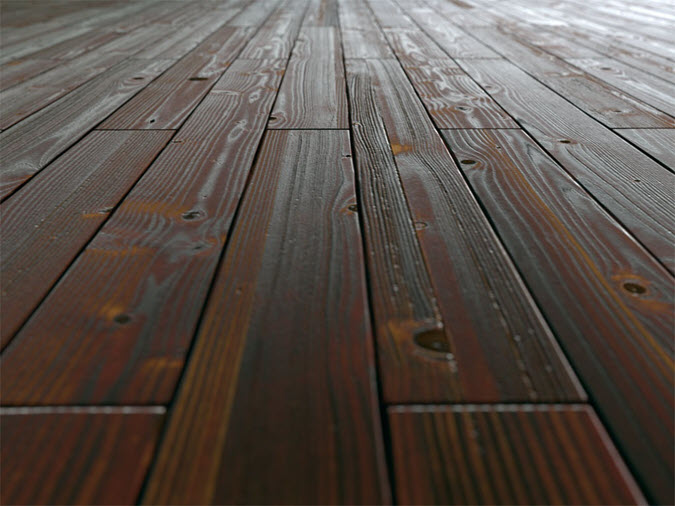

本教程通过一个简单的木质地板场景说明使用 maketx 来预处理纹理的好处。本教程分为以下页面：
为了充分发挥 Arnold 的优势，强烈建议您将图像转化为经过 Mipmap 处理的分片纹理。未进行 Mip 处理的高分辨率纹理贴图渲染效率很低，因为无论距离如何，都必须将最高分辨率级别的贴图加载到内存中，而不是加载较低分辨率级别的贴图。同样，未分片的纹理贴图效率也很低，因为当渲染器需要访问一个纹理元素时，必须将它们完全加载到内存中。本教程结束时，您将能够减少不到一半的渲染时间。
| 格式 | 自动 MipMap | 渲染时间 | 文件 I/O | 峰值缓存内存 |
|---|---|---|---|---|
| JPG | 开启 | 43 秒 | 4 分 10.4 秒 | 394.9 MB |
| JPG | 关闭 | 36 秒 | 1 分 47.1 秒 | 173.5 MB |
| TX | - | 20 秒 | 0 分 0.6 秒 | 34.5 MB |
更快将纹理转化为 .tx 的方法是使用 TX 管理器。